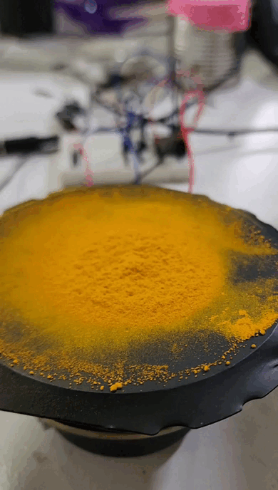
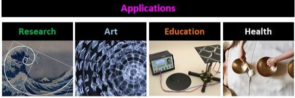
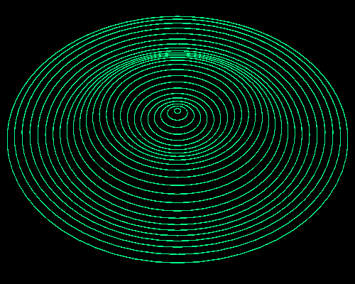

AI Website GeneratorReflections, discoveries, and hands and REPO.

After interacting with these invisible forms, my vision of possibilities expanded. Attempting to connect with them is not easy, as our bodies generate noise that hinders direct communication. In the case of frequencies and vibrations, the noise often came from the apparatus we built. Through trial and error, we gradually managed to tune in to these frequencies. It was as if the few times we could see the patterns on the plates gave us more hope to continue exploring. Sometimes, nothing would appear—our apparatus was noise, we were noise. Consistency is key to contacting and understanding these secret languages of nature. However, with the help of creativity and conscious technology, we are getting closer.
This project has taught us the importance of perseverance and innovation. The fleeting moments when we successfully visualized the patterns were incredibly motivating. They confirmed that we were on the right path, encouraging us to refine our methods and tools. Although the journey is challenging, the promise of uncovering nature’s hidden languages keeps us driven. By combining creative thinking with technological advancements, we aim to reduce the noise and enhance our ability to perceive these subtle, yet profound, natural frequencies and vibrations.


AI Website Generator